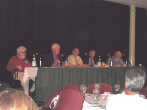
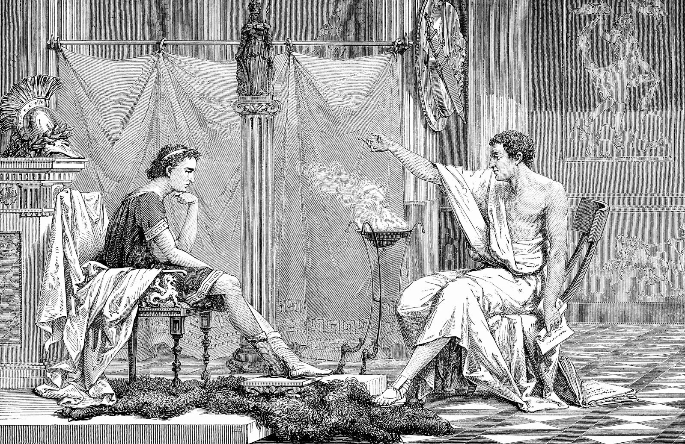

A História da Inteligência Artificial (IA) começou na antiguidade com mitos, histórias e rumores de seres artificiais dotados com inteligência ou consciência pelos seus fabricantes; conforme Pamela McCorduck escreve, IA começou com "um desejo antigo de forjar os deuses."
As sementes da IA moderna foram plantadas pelos filósofos clássicos que tentaram descrever o processo de pensamento humano como um mecanismo de manipulação de símbolos. Este trabalho culminou com a invenção do computador digital programável na década de 1940, uma máquina baseada na essência abstrata da razão matemática. Este dispositivo e as ideias por trás inspiraram cientistas a começar a discutir seriamente a possibilidade de construir um cérebro eletrônico.
O campo de pesquisa da inteligência artificial foi fundado em uma conferência no campus do Dartmouth College no verão de 1956.

Aqueles que participaram do evento viriam a ser os líderes na pesquisa com IA por décadas. Muitos deles prediziam que uma máquina tão inteligente quando um ser humano iria existir em não mais do que uma geração. Eventualmente, ficou óbvio de que eles subestimaram grosseiramente as dificuldades para o projeto. Em 1973, em resposta ao criticismo de James Lighthill e a pressão crescente do congresso, o DARPA e o governo britânico pararam de financiar pesquisas indiretas sobre inteligência artificial. Sete anos depois, uma visionária iniciativa do governo japonês inspirou governos e empresários a financiar bilhões em pesquisas mas posteriormente no final da década de 1980 os investidores viriam a se desiludir novamente. Estes ciclos de altos e baixos continuam a assombrar este campo de pesquisa. Ainda na atualidade existem predições extraordinárias de que até 2029 existirão máquinas com o nível de inteligência humano. O progresso em pesquisas sobre inteligência artificial continua apesar dos altos e baixos de sua reputação aos olhos dos governos e aventureiros capitalistas. Problemas que pareciam insolucionáveis em 1970 foram resolvidos e as soluções são agora utilizadas comercialmente. Entretanto, nenhuma máquina foi construída ao nível de inteligência humano, ao contrário das predições otimistas da primeira geração de pesquisadores. "Nós podemos ver somente a uma curta distância à frente," admitiu Alan Turing em um artigo da década de 1950 que catalisou a pesquisa moderna por máquinas pensantes. "Mas," ele acrescentou, "nós podemos ver que pode ser feito".
Não é de hoje que abordamos ferramentas de inteligência artificial no Tecnoblog. Vemos o Google aproveitando a tecnologia para vencer campeões mundiais de jogos de tabuleiro complexos e até combater o Aedes aegypti. A Microsoft já sinalizou vários investimentos na área, seja com “capacidade humana” ou nos aplicativos da Microsoft Research.
O que pouca gente sabe é que ela é uma das novidades mais… antigas, sendo idealizada em tempos até antes de Cristo. A inteligência artificial, ainda que muito mais palpável nos dias de hoje, vem até dos filósofos gregos e teve um grande avanço também no século XX. Para falar sobre o assunto, entrevistamos João Fernando Marar, professor doutor de Inteligência Artificial na Universidade Estadual Paulista (Unesp).
Para entender o que exatamente é esse termo, precisamos recorrer à origem da inteligência artificial. Ela é uma área da ciência da computação na qual os pesquisadores buscavam realidades diferentes de um modelo simplesmente programático. Não para resolver problemas simples, como adição de dois números, mas para criar uma espécie de pensamento na computação.
A área é dividida em duas partes: inteligência artificial simbólica, que é ligada à psicologia; e a de conexionismo, ou redes neurais artificiais, que vem da neurofisiologia. Essa última, para referência, foi a que o Google mencionou quando explicou como funciona o AlphaGo, robô de IA da DeepMind treinado para jogar Go.
A ciência da computação é uma área de estudo recente, mas não a inteligência artificial. “Ela vem lá dos filósofos gregos, do Platão, do Aristóteles. É muito interessante observar esses estudiosos do passado. Eles vão remontando e construindo o que nós entendemos hoje como um modelo científico”. “Aí você pensa, mas um cara lá em 300 a.C. já pensava à frente do nosso tempo?’. Sem dúvida”.

Inteligência artificial na antiguidade:
Não que já existissem sistemas que faziam coisas por si próprios, mas a ideia de uma inteligência não humana que pensasse por si própria já era idealizada. Ele diz que Aristóteles, professor de Alexandre, o Grande, rei da Macedônia (na Grécia Antiga), pensava em como livrar o escravo dos seus afazeres.
“O escravo era tratado como um nada no aspecto social. Ele imaginava o seguinte: será que um objeto como uma vassoura, ou seja, um elemento que faz a limpeza, pode ter vontade própria e estabelecer o sistema de arrumação? Dessa forma, não precisaríamos mais da mão de obra escrava”. “Esses caras viam que não era legal ter esse domínio e sacrifício de outro ser humano. Ele inventou a robótica em 300 a.C!”.
Ele explica que os filósofos se perguntavam coisas como: “será que um escravo, em posse de informações inatas (que já vêm com a natureza do homem), poderia aprender matemática?”. É claro que sim. O revolucionário está na linha de pensamento, pois eles já idealizavam a ciência cognitiva, que trata da aprendizagem humana.
A década de 50 pode ser considerada a época dos anos dourados da inteligência artificial. Havia uma corrente psicológica chamada de “behavioristas”, que tratavam a ciência somente como ato do comportamento humano: sua mão gira segurando uma maçaneta porque você quer abrir a porta, por exemplo. “Eu tenho que ter processamento de informação, que é o que a ciência cognitiva faz”.
“Não é só uma caixa de entrada, um input e um output. Eu quero saber o que tem aqui dentro [da caixa]. É o que a inteligência artificial estuda, saber o que tem dentro dessa grande caixa. A inteligência artificial se ramifica em muitas áreas, de games à filosofia. No fundo, podemos imaginar essa ciência como uma grande capilaridade, que pode ser aplicada basicamente em tudo”, explica.
O principal, então, é entender que a inteligência artificial é uma só, mas sua capilaridade é gigantesca.
O que conhecemos hoje como inteligência artificial foi detalhado em um congresso pelo professor John McCarthy, da Universidade Stanford. Ele começou a usar o termo na conferência que fez na Faculdade de Dartmouth, em New Hampshire.
Na época, já existiam várias teorias de complexidade, simulação de linguagem, redes neurais e máquinas de aprendizagem. Ele resolveu dar o nome de inteligência artificial para esses sistemas de imaginação humana que usam a ciência da computação. Vários engenheiros, matemáticos, psicólogos e neurocientistas participaram.
A capacidade e a funcionalidade eletrônica dobravam a cada 18 meses, um crescimento quase exponencial que praticamente não parava de subir. Os participantes do congresso saíram de lá crentes que, um dia, os computadores conseguiriam ser tão inteligente quanto os humanos. Bom, ainda não aconteceu.
Mesmo assim, McCarthy conseguiu grandes avanços em seu laboratório, um dos primeiros dedicados ao desenvolvimento da inteligência artificial. Ele ganhou o prêmio Turing em 1971, dado a cientistas de computação que fizeram grandes e duradoras contribuições para a área. Esse prêmio é basicamente o Nobel da ciência da computação.